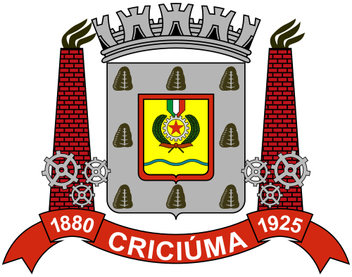

Saiba todas as investigações da sua cidade — tudo o que o Ministério Público e o Tribunal de Contas apuram na Região Carbonífera, em linguagem que qualquer pessoa entende.

Ministério Público (MP): investiga suspeitas de irregularidade e, se achar prova, processa na Justiça. • Tribunal de Contas (TCE): julga as contas da prefeitura — quando diz “contas irregulares”, já é uma decisão, com multa e devolução de dinheiro.
| Nome | Cargo na época |
|---|---|
| João Batista Belloli | Secretário de Obras |
| Joice M. de M. Gerônimo | Engenheira fiscal da obra |
| Clésio Salvaro | Ex-prefeito (apontado como responsável) |
Este documento mostra 8 casos de Criciúma. O dossiê completo cobre todas as cidades da região Carbonífera — cada prefeitura, cada investigação do MP e cada julgamento do TCE, atualizado a cada nova edição dos Diários Oficiais.